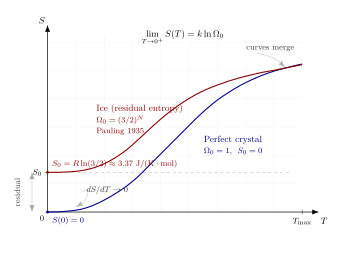

第三定律 — 为什么 $T\to 0$ 时熵走向常数?
把一块铜放进液氦杜瓦里, 温度降到 4 K; 把它再送进稀释制冷机, 降到 10 mK; 再送进核退磁装置, 降到微开尔文. 每次降温, 从铜里"取"出同等焦耳的热量, 所要排出的熵越来越多 —— 因为 $dS = dQ/T$, 分母越小熵越贵. 这件事在数学上非常简单, 在工程上却异常昂贵: 低温实验室的每一步降温, 花的力气都比上一步多得多. 你会自然地问: 这条路能走到底吗? 能不能用有限次操作, 把一块样品降到 $T = 0$?
第三定律就是对这个问题的否定回答. 但它远不止"$T=0$ 不可达"这一句话. 它还同时断言: 在 $T\to 0$ 时, 所有凝聚相的熵趋向同一个常数 (对完美晶体取为零); 比热 $C(T)$ 必须趋向零; 热膨胀系数也必须趋向零. 这些看上去互不相干的陈述, 其实是同一件事的不同侧面. 而这件事的根, 要回到 Boltzmann 那条 $S = k\ln\Omega$ 的墓志铭去找 —— 它告诉我们 $T\to 0$ 时的熵, 只是基态有多少微观状态的对数.
这一节我们先从实验事实出发 (一、), 把 Nernst 和 Planck 的陈述挂到历史坐标上; 接着严格 deepdive (二、) "为什么熵走向常数"这个 cliché 问题, 从统计力学第一性原理推到底; 然后 (三、) 把它翻译成对比热和不可达性的约束; 最后 (四、) 代入冰的残余熵和 Debye $T^3$ 定律两个具体数字, 把整个论证闭环.
一、Nernst 1906: 从化学反应的低温数据开始
第三定律不是坐在椅子上想出来的, 它是从一大堆低温化学反应的热力学数据里挤出来的. 故事开始于 1906 年的 Göttingen. 当时 Walther Nernst 在做电化学和低温反应焓变的系统测量, 他注意到一件奇怪的事: 把同一个化学反应 $A + B \to C + D$ 的 Gibbs 自由能变化 $\Delta G(T)$ 和焓变化 $\Delta H(T)$ 都画成温度的函数, 二者在 $T\to 0$ 时都趋向同一个有限值, 而且 —— 这是关键 —— 它们趋近的斜率同时趋向零:
$$ \lim_{T\to 0}\frac{\partial\Delta G}{\partial T} = 0, \qquad \lim_{T\to 0}\frac{\partial\Delta H}{\partial T} = 0. \tag{1} $$
回忆 Gibbs-Helmholtz 关系 $\Delta G = \Delta H - T\Delta S$, 对 $T$ 求偏导, 再用 $(\partial\Delta G/\partial T)_p = -\Delta S$: 条件 (1) 就等价于 $\Delta S(T\to 0)\to 0$. 也就是说, 任何化学反应在 $T\to 0$ 极限下, 反应前后的熵差趋向零. 这就是 Nernst 原版定理 (Nernst Wärmetheorem): 熵在 $T=0$ 点的值不依赖于化学组成, 不依赖于体积, 不依赖于外场 —— 一切可调参数在 $T=0$ 处都拉不动熵.
Nernst 的陈述本身只说 $\Delta S\to 0$, 没说 $S$ 本身是多少. 把这个绝对值钉死的是 Planck, 他在 1911 年的《热辐射理论讲义》里补了一条: 对于完美晶体, $S(T=0) = 0$. 这个加强版之所以自然, 是因为如果我们承认 $\Delta S = 0$ 适用于一切反应, 那么参考点本来可以随便选, 不妨就把完美晶体的 $S(0)$ 定为零. 更深的根据要等到统计力学, 我们放到下一节严格推.
Nernst 原版还隐含了一条更强的陈述, 通常叫做"不可达性原理": 不能通过有限个热力学步骤把一个系统从任意初态降到 $T = 0$. 这条和 $\Delta S\to 0$ 的逻辑关系微妙 — 我们会在第三节里展开. 这里先记住: 历史上, Nernst 先有"$\Delta S\to 0$", 然后由此推出了"$T=0$ 不可达"; 但逻辑上, 二者等价性要加一些条件.
二、为什么是走向常数 ? — 从 $S = k\ln\Omega$ 的严格 deepdive
现在来认真回答本节最核心的问题: 为什么 $T\to 0$ 时熵走向一个 有限常数, 而不是发散到 $+\infty$, 也不是塌缩到 $-\infty$? 教科书通常一带而过说 "因为基态只有一个状态", 但这没有解释为什么一定如此, 也没说清楚残余熵是什么意思. 我们从头推.
取一个孤立系统, 固定体积 $V$, 固定粒子数 $N$, 固定总能量 $E$. 按 Boltzmann 的定义, 其熵为
$$ S(E, V, N) = k\ln\Omega(E, V, N), \tag{2} $$
其中 $\Omega(E,V,N)$ 是系统在能量 $E$ (或更精确地, 在 $[E, E+\delta E]$ 小窗口里) 的微观态数. 这个定义是统计力学的出发点, 我们以它为准.
现在让温度趋于零. 热力学上, 温度由 $1/T = (\partial S/\partial E)_{V,N}$ 给出. $T\to 0^+$ 意味着 $\partial S/\partial E \to +\infty$, 也就是 $\Omega(E)$ 对 $E$ 的依赖变得极陡 —— 能量稍微往上挪一点, 态数就暴涨. 直观上这对应系统几乎全部挤在最低能量 $E_0$ 附近; 往上只要一点点能量, 可访问的态就多出指数倍.
严格地说, 设基态能量为 $E_0$, 基态简并度为 $\Omega_0$ (即能量正好等于 $E_0$ 的微观态数). 设第一激发能隙为 $\Delta$. 在正则系综里, 系统在温度 $T$ 的配分函数
$$ Z(T) = \Omega_0 e^{-\beta E_0} + \Omega_1 e^{-\beta(E_0+\Delta)} + \cdots $$
当 $k_BT \ll \Delta$, 除基态项之外所有项都被指数因子 $e^{-\beta\Delta}$ 压死. 此时系统几乎处于基态簇上的均匀分布. 熵是什么? 按 Gibbs 熵公式 $S = -k\sum_i p_i\ln p_i$, $\Omega_0$ 个基态各占 $1/\Omega_0$ 的概率, 其他态概率指数小, 贡献可忽略. 于是
$$ \lim_{T\to 0^+} S(T) = k\ln\Omega_0. $$
这就是第三定律的严格统计版本: $T\to 0$ 时的熵等于基态简并度的对数, 是一个由系统结构决定的 $O(1)$ 或 $O(N^0)$ 有限常数. 它不会发散, 因为 $\Omega_0$ 对任何有限系统都是有限整数; 它不会是负的, 因为 $\Omega_0\ge 1$ 给出 $S\ge 0$. 它也不趋向热力学极限下的一个"宏观值" $\sim N$, 除非基态本身有宏观简并 —— 这就是残余熵情形.
现在把两种情况分开.
情形 A — 完美晶体. 设想一个纯净、无缺陷、无同位素混乱、无取向混乱的理想晶体. 它的基态 (零点振动下的量子基态) 是唯一的, 即 $\Omega_0 = 1$. 于是 $S(0) = k\ln 1 = 0$. 这是 Planck 版第三定律的微观根据.
情形 B — 带残余熵的系统. 不是所有系统都能在 $T\to 0$ 时落到一个唯一基态上. 想象一个晶体, 它的每个格点都有若干个能量相同的构型 (比如分子朝向), 而系统的能量并不足以分辨它们. 在冷却过程中, 每个格点会在这些构型里 "冻结"到随机一个; 宏观上, 微观状态数是
$$ \Omega_0 = g^{N}, $$
其中 $g$ 是每格点的简并构型数, $N$ 是格点数. 此时 $S(0) = Nk\ln g$ 不再为零, 而是按 $N$ 线性增长的 "宏观" 残余熵. 注意这里的关键字: 系统并没有违反 "基态简并度有限" 这一条 —— $\Omega_0 = g^N$ 仍然是有限整数; 只是它作为 $N$ 的函数发散 (指数级), 使得 "每粒子熵" $s_0 = S_0/N = k\ln g$ 是有限正数. 这就是残余熵的精确定义: 基态具有 $e^{cN}$ 量级的宏观简并.
两种情形的分水岭在哪里? 在于冷却过程能否让系统真正落到它理论上最低能量的那个 (或那些) 微观态. 完美晶体的基态是单一的量子态, 足够慢的冷却总能到达; 冰这样的系统, 基态已经宏观简并, 冷却过程物理上就把系统困在一堆等价的 "玻璃态" 里.
还要验证一件事: 这样的 $S(T)\to S_0$ 趋近, 是否和热力学关系 $S(T) - S(0) = \int_0^T C(T')/T'\,dT'$ 自洽? 要让这个积分在 $T'\to 0$ 处收敛, $C(T')$ 必须比 $T'$ 更快地趋向零, 即 $C\propto T^n$, $n \gt 0$. 这是第三定律强加给比热温度依赖的约束 —— 下一节立刻会用到.
反过来想一个极端情况巩固直觉: 假设某个系统 $C(T) = $ 非零常数 (这是经典统计力学的预言, 违反第三定律). 那 $\int_0^T C/T'\,dT'$ 在下限处发散为 $-\infty$; $S(T)\to -\infty$. 经典理论里没有第三定律, 所以它不知道熵有 "下界"; 是量子力学把能级离散化, 才把基态从连续谱里挖了出来, 给了熵一个硬底. 换言之, 第三定律骨子里是量子定律.

三、推论一: 比热必须趋零, $T=0$ 必须不可达
把上一节得到的 "$S(T\to 0) = S_0$ 有限" 翻译成对可测量的约束, 至少有两条立刻浮出水面.
约束 1 — 比热必须按幂律趋零. 由热力学关系 $C_V = T(\partial S/\partial T)_V$, 得 $dS/dT = C/T$. 要让 $S(T)$ 在 $T\to 0$ 时趋向有限值, 必须有 $\int_0^T (C/T')\,dT'$ 收敛. 这要求 $C(T)$ 比 $T^0$ 更快地趋零, 具体地 $C(T)\propto T^n$ 且 $n \gt 0$. 对绝缘晶体, 声子贡献给出 $n = 3$ (Debye 定律), 我们下一节立刻代入. 对普通金属, 电子贡献给出额外的 $n = 1$ 线性项, 但在更低温度下仍然被声子项压低. 对超导体, 指数关系 $C\sim e^{-\Delta/T}$ 甚至更强. 一切符合第三定律的系统, 比热在 $T\to 0$ 处都压扁成零.
对比: 经典等分定理给 $C = \frac{1}{2}fk$ ($f$ 自由度数), 是一个与 $T$ 无关的常数. 如果这成立一直到 $T = 0$, 熵积分就发散. 所以 Debye 在 1912 年建立固体比热量子理论时, 他能得到 $C\propto T^3$ 的低温律, 既是量子力学的一个漂亮胜利, 也是第三定律的量化表达.
顺带一条推论: 等压热膨胀系数 $\alpha = V^{-1}(\partial V/\partial T)_p$. 由 Maxwell 关系 $(\partial S/\partial p)_T = -(\partial V/\partial T)_p$, 再利用 $(\partial S/\partial p)_T\to 0$ 当 $T\to 0$ (因为 $S$ 在 $T=0$ 处不依赖外部参数), 得到 $\alpha\to 0$. 这也是实验可检验的陈述 — 固体在超低温下几乎不随温度膨胀.
约束 2 — $T = 0$ 在有限步骤内不可达. 这是 Nernst 1912 年给出的更强陈述, 也是他本人最看重的那一条. 证明思路简洁而有力. 降温在热力学上无非两种操作: (i) 等温步骤 —— 让系统在温度 $T_n$ 下接触热库, 改变某个参数 $x$ (比如压强或磁场), 令熵从 $S_n^{\rm upper}(T_n)$ 降到 $S_n^{\rm lower}(T_n)$; (ii) 绝热步骤 —— 保持 $S$ 不变, 再次改变参数, 使温度从 $T_n$ 降到 $T_{n+1} \lt T_n$. 绝热磁化-绝热去磁循环, 就是这种两步操作的教科书例子.
现在看临界点 $T\to 0$. 由第三定律, 所有参数 $x$ 的 $S(T=0, x)$ 趋向同一个值 $S_0$ (不依赖 $x$). 也就是说, 在 $(T, S)$ 图上, 不同 $x$ 对应的 $S(T, x)$ 曲线, 在 $T=0$ 处汇聚到同一点. 绝热步骤是水平线段 (熵不变), 等温步骤是竖直线段 (温度不变). 要把温度真正降到 $T = 0$, 必须有一条水平线段正好终止于 $T = 0$. 但既然所有曲线都在 $T=0$ 处相交, 这种水平线段永远无法终结 —— 它只能在 $T \gt 0$ 处从一条曲线跳到另一条, 再竖直降温, 如此迭代. 每次迭代温度乘以一个小于 1 的因子, 趋向零但永远到不了. 这就是 "不可达性".
反过来: 如果 $S(T=0, x)$ 依赖 $x$, 那么两条曲线在 $T=0$ 处就分离, 总可以找到一条 "最左下" 的绝热路径, 在一步之内把温度打到零. 正是因为第三定律保证汇聚, 这种奇迹被禁止. 需要注意的是, 这里 "第三定律 $\Leftrightarrow$ 不可达性" 的等价性是有条件的 — 严格地说, 不可达性蕴含 $\Delta S\to 0$, 反过来还需要 "$S$ 对参数的依赖性足够光滑" 这样的假设. 学术文献里有许多对这个等价性成立条件的细节讨论; 这里不展开, 但原则上值得知道: 二者不是 tautology.
四、代入两个数字: Pauling 冰与 Debye $T^3$
把第三定律挂到实测数字上. 两个经典算例: 冰的残余熵 (Pauling 1935), 和固体低温比热的 Debye $T^3$ 律.
算例一 — 冰的残余熵. 水分子 $\text{H}_2\text{O}$ 在冰晶格里有一个好玩的几何约束 (Bernal-Fowler "冰规则"): 每个氧原子周围是四面体配位的四个氧原子, 四条氧-氧键里, 有 正好两条 上靠近本氧的氢 (共价键), 另外两条的氢在邻氧一侧 (氢键). 这叫 "两近两远" 规则. 问题是: 给定氧骨架, 有多少种满足冰规则的氢原子构型?
Pauling 在 1935 年给出了著名的估算. 每个氧原子的四条键上, 按 "独立" 看每个氢位置有 2 种选择, 总构型数本来是 $2^{2N}$ ($N$ 个氧, 每个周围 $2N$ 条键 —— 但每条键被两个氧共享, 所以独立键数是 $2N$). 对每个氧而言, $2^4 = 16$ 种氢可能配置中, 只有 $C(4,2) = 6$ 种满足 "两近两远"; 也就是一个节点的满足率是 $6/16 = 3/8$. 假设 (这是 Pauling 的关键近似) 不同节点的约束独立:
$$ \Omega_0 \approx 2^{2N}\cdot\left(\frac{6}{16}\right)^N = 2^{2N}\cdot\left(\frac{3}{8}\right)^N = \left(\frac{3}{2}\right)^N. $$
残余熵每摩尔
$$ S_0 = k_B\ln\Omega_0 / \text{mol} = R\ln(3/2) = 8.314\times\ln 1.5 \approx 8.314\times 0.4055\approx 3.37\,\text{J/(K}\cdot\text{mol)}. $$
实验测量 (Giauque 和 Stout 在 1936 年做的精密低温量热实验) 给出冰在 $T\to 0$ 外推的残余熵约 $3.41\,\text{J/(K}\cdot\text{mol)}$, 与 Pauling 的 $3.37$ 只差 1%. 这是统计力学最漂亮的定量预言之一: 仅凭 "两近两远" 这一几何约束, 加上节点独立近似, 就把一个 $T=0$ 的宏观可测量算到一位有效数字. 后续精确的组合数值 (Nagle 1966) 给 $S_0 \approx 0.4104 R$, 比 Pauling 略高, 说明节点间约束略有负关联, 但 Pauling 估算的物理图像已经抓住了本质.
这个数字的意义: 冰绝不是 Planck 意义下的完美晶体; 它在 $T\to 0$ 时仍带有每摩尔 $3.4\,\text{J/K}$ 的熵. 如果 Nernst 的 "$\Delta S\to 0$ 于任何反应" 要适用, 必须说明: 冰形成时残余熵从哪里来, 反应另一端 (如氧气+氢气) 的残余熵对应怎样结构, 二者的差趋向零. 实际上对反应 $\text{H}_2 + \frac{1}{2}\text{O}_2\to \text{H}_2\text{O}(\text{s})$ 做低温推算, 必须把冰的残余熵 $3.4\,\text{J/(K}\cdot\text{mol)}$ 扣除, 数据才能和独立测定的气相熵对上. 这反过来验证: 残余熵是真实的, 冰是 Planck 定律的反例, 但仍合乎 Nernst 原版 (因为 $\Delta S$ 对可调参数仍为零).
算例二 — Debye $T^3$ 与熵积分. 低温绝缘晶体的声子比热 $C_V = (12\pi^4/5) R (T/\Theta_D)^3$, 其中 $\Theta_D$ 是 Debye 温度. 对铜, $\Theta_D \approx 343$ K. 取 $T = 1$ K:
$$ C_V = \frac{12\pi^4}{5}\times 8.314\times\left(\frac{1}{343}\right)^3 \approx 233.8\times 8.314\times 2.48\times 10^{-8}\approx 4.8\times 10^{-5}\,\text{J/(K}\cdot\text{mol)}. $$
(实际铜在 1 K 时还有电子线性项 $\gamma T$ 贡献, $\gamma\approx 0.7\,\text{mJ/(K}^2\cdot\text{mol)}$, 在 1 K 给 $7\times 10^{-4}$, 反而比声子项大两个量级 — 这是金属特有的. 这里只做声子示意.)
在这个区间, 从 $T=0$ 到 $T$ 的熵积分
$$ S(T) = \int_0^T \frac{C_V(T')}{T'}\,dT' = \frac{12\pi^4}{5} R\int_0^T\frac{T'^2}{\Theta_D^3}\,dT' = \frac{4\pi^4}{5}R\left(\frac{T}{\Theta_D}\right)^3. $$
这个积分干净收敛, 正如第三定律所要求. 数值上, 铜在 1 K 的声子熵 $\approx (4\pi^4/5)\times 8.314\times (1/343)^3 \approx 1.6\times 10^{-5}\,\text{J/(K}\cdot\text{mol)}$ —— 微不足道, 和 "完美晶体 $S(0) = 0$" 完全一致.
极限检验一下. 把 Debye 定律人为扩展到高温 ($T\to\infty$), $C_V\to 3R$ 按 Dulong-Petit, 积分 $\int_0^T 3R/T'\,dT'$ 在上限对数发散 —— 但 Debye 律本来就只在 $T\ll \Theta_D$ 有效, 高温区要用完整的 Debye 积分, 那里 $S$ 有限. 下限 $T\to 0$ 才是第三定律起作用的地方; $T^2$ 被积函数在 $T=0$ 处比 $1/T$ 更快地趋零, 积分收敛, 熵趋向零. 这是第三定律对比热温度指数 $n \gt 0$ 要求的一个具体例子.
历史尾声. Nernst 以外的几个名字值得记一下. Planck 1911 年加强到 $S(0) = 0$; Einstein 1907 年给出单频率固体比热模型, 虽不准但引出 "量子决定低温比热" 的方向; Debye 1912 年修正为 $T^3$ 定律, 把量子固体物理钉在实验数据上; Pauling 1935 年预言冰的残余熵, 是残余熵概念的经典样本; Giauque 1936 年用绝热去磁首次达到 $10^{-3}$ K 量级 (并凭此获 1949 年诺贝尔化学奖); 到现代, 核自旋退磁把温度推到 $10^{-9}$ K 量级, 但始终跨不过 $T = 0$ 这道线 —— 物理学家用越来越狡猾的手段接近它, 第三定律始终在那里拦着. Linde 等现代低温工业的极低温制冷机, 其效率极限仍由 Nernst 不可达性决定.
小结
第三定律的核心, 是统计力学给 $S(T\to 0)$ 强加的一条结构性约束: 熵只能趋向 $k\ln\Omega_0$, 其中 $\Omega_0$ 是基态简并度. 完美晶体 $\Omega_0 = 1$, 熵归零; 冰、自旋玻璃等系统 $\Omega_0 = e^{cN}$, 给出宏观残余熵 (冰: $R\ln(3/2)\approx 3.4\,\text{J/(K}\cdot\text{mol)}$). 这一事实有两条可测推论: 比热必须比 $T$ 更快地趋零 (Debye 律的 $T^3$ 是例子), 热膨胀系数也必须趋零; 以及更深一层, $T=0$ 在有限步内不可达 —— 所有参数的 $S(T, x)$ 曲线在 $T=0$ 处汇聚, 绝热降温每步都只能跨越越来越小的温度间隔. 第三定律说到底是量子力学的事: 是量子离散能谱把基态从连续中挖出, 给了熵一个硬底; 经典力学里没有这回事. 沿着这条思路走到 Carnot 定理, 我们下一节会看到: 热机效率的 $1 - T_c/T_h$ 上限也和 $T = 0$ 的不可达性关系密切 —— 因为只有 $T_c = 0$ 才能让效率 $\to 1$, 而第三定律说这办不到.
▲